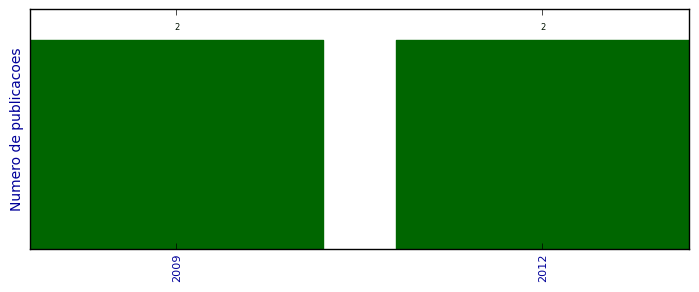

UFSM - Análise do Lattes
Trabalhos completos publicados em anais de congressos

Número total de itens: 4
(A1: 0, A2: 0, B1: 0, B2: 0, B3: 0, B4: 1, B5: 0, C: 0, Qualis não identificado: 3)
Legenda Qualis:
- Publicação para a qual o nome exato do Qualis foi identificado: Qualis <estrato>
- Publicação para a qual um nome similar (não exato) do Qualis foi identificado: Qualis <estrato> (nome similar)
- Publicação para a qual nenhum nome do Qualis foi identificado: Qualis não identificado (nome usado na busca)
2012
| 1. | FREITAS, LEANDRO O. ; LIBRELOTTO, GIOVANI R. ; PEREIRA, HENRIQUE G.G. ; KASPER, JEFERSON ; MARTINI, RICARDO G. ; MOZZAQUATRO, BRUNO ; PEREIRA, RAFAEL T.. Applying Pervasive Computing in an Architecture for Homecare Environments. Em: 2012 IEEE 9th Int'l Conference on Ubiquitous Intelligence Computing / 9th Int'l Conference on Autonomic Trusted Computing (UIC/ATC), 2012.  [ citações Google Scholar | citações Microsoft Acadêmico | busca Google ] Qualis: Não identificado (2012 IEEE 9th Int'l Conference on Ubiquitous Intelligence Computing / 9th Int'l Conference on Autonomic Trusted Computing (UIC/ATC)) |
| 2. | PEREIRA, H. G. G. ; LIBRELOTTO, G. R.. Definição de uma Arquitetura para o Uso de Computação nas Nuvens em Ambientes de Computação Pervasiva. Em: XXXIX Seminário Integrado de Software e Hardware, 2012. [ citações Google Scholar | citações Microsoft Acadêmico | busca Google ] Qualis: B4 (Seminário Integrado de Software e Hardware) |
2009
| 1. | PEREIRA, H. G. G. ; CASSAL, M. L. ; DHEIN, G. ; PINTO, T. R.. Geolocalização com o Google Maps e Redes Sem Fio. Em: Simpósio de Informática da Região Centro, 2009. [ citações Google Scholar | citações Microsoft Acadêmico | busca Google ] Qualis: Não identificado (Simpósio de Informática da Região Centro) |
| 2. | PEREIRA, H. G. G. ; TURCHETTI, R. C. ; PASSETO, L. F. ; BAGGIO, J. E. ; LIBRELOTTO, G. R.. Utilizando o Gerenciador de Rede WICD Com Localização Física de Dispositivos. Em: Fórum Internacional do Software Livre, p. 109-114, 2009. [ citações Google Scholar | citações Microsoft Acadêmico | busca Google ] Qualis: Não identificado (Fórum Internacional do Software Livre) |
(*) Relatório criado com produções desde 2009 até HOJE
Data de processamento: 11/04/2014 17:10:07